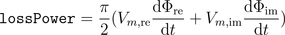
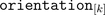
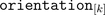
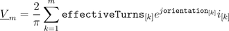

and the complex magnetic flux
and the complex magnetic flux  ,
,
Basic fundamental wave components
Basic components of the FundamentalWave library for modeling magnetic circuits. Machine specific components are located at Machines.Components.
Extends from Modelica.Icons.Package (Icon for standard packages).
| Name | Description |
|---|---|
| Ground | Magnetic ground |
| Reluctance | Salient reluctance |
| EddyCurrent | Constant loss model under sinusoidal magnetic conditions |
| SinglePhaseElectroMagneticConverter | Single phase electro magnetic converter |
| MultiPhaseElectroMagneticConverter | Multi phase electro magnetic converter |
| Idle | Salient reluctance |
| Short | Salient reluctance |
Magnetic ground
Grounding of the complex magnetic potential. Each magnetic circuit has to be grounded at least one point of the circuit.
| Name | Description |
|---|---|
| port_p | Complex magnetic port |
Salient reluctance
The salient reluctance models the relationship between the complex magnetic potential difference
and the complex magnetic flux ,
which can also be expressed in terms complex phasors:
Extends from Modelica.Magnetic.FundamentalWave.Interfaces.PartialTwoPortElementary (Two magnetic ports for textual modeling).
| Name | Description |
|---|---|
| R_m | Magnetic reluctance in d=re and q=im axis |
| Name | Description |
|---|---|
| port_p | Positive complex magnetic port |
| port_n | Negative complex magnetic port |
Constant loss model under sinusoidal magnetic conditions
The eddy current loss model with respect to fundamental wave effects is designed in accordance to FluxTubes.Basic.EddyCurrent.

|
Due to the nature of eddy current losses, which can be represented by symmetric
conductors in an equivalent electric circuit (Fig. 1), the respective
number of phases  has to be taken into account.
Assume that the conductances
of the equivalent circuit are
has to be taken into account.
Assume that the conductances
of the equivalent circuit are  ,
the conductance for the eddy current loss model is determined by
,
the conductance for the eddy current loss model is determined by
where  is the number of turns of the symmetric electro magnetic coupling.
is the number of turns of the symmetric electro magnetic coupling.
For such an phase system
the relationship between the voltage and current space phasors
and the magnetic flux and magnetic potential difference phasor is
,
,
where  and
and  are the phase voltages and currents, respectively.
are the phase voltages and currents, respectively.
The dissipated loss power

can be determined for the space phasor relationship of the voltage and current space phasor.
Extends from Modelica.Magnetic.FundamentalWave.Interfaces.PartialTwoPortElementary (Two magnetic ports for textual modeling), Modelica.Thermal.HeatTransfer.Interfaces.PartialElementaryConditionalHeatPort (Partial model to include a conditional HeatPort in order to dissipate losses, used for textual modeling, i.e., for elementary models).
| Name | Description |
|---|---|
| G | Equivalent symmetric loss conductance [S] |
| useHeatPort | =true, if heatPort is enabled |
| T | Fixed device temperature if useHeatPort = false [K] |
| Name | Description |
|---|---|
| port_p | Positive complex magnetic port |
| port_n | Negative complex magnetic port |
| heatPort | Optional port to which dissipated losses are transported in form of heat |
Single phase electro magnetic converter
The single phase winding has an effective number of turns,  and a respective orientation of the winding,
and a respective orientation of the winding,  . The current in winding is
. The current in winding is  .
.
The total complex magnetic potential difference of the single phase winding is determined by:

In this equation the magneto motive force is aligned with the orientation of the winding.
The voltage  induced in the winding depends on the cosine between the orientation of the winding and the angle of the complex magnetic flux. Additionally, the magnitudes of the induced voltages are proportional to the respective number of turns. This relationship can be modeled by means of
induced in the winding depends on the cosine between the orientation of the winding and the angle of the complex magnetic flux. Additionally, the magnitudes of the induced voltages are proportional to the respective number of turns. This relationship can be modeled by means of

The single phase electromagnetic converter is a special case of the MultiPhaseElectroMagneticConverter
MultiPhaseElectroMagneticConverter
| Name | Description |
|---|---|
| effectiveTurns | Effective number of turns |
| orientation | Orientation of the resulting fundamental wave V_m phasor [rad] |
| Name | Description |
|---|---|
| pin_p | Positive pin |
| pin_n | Negative pin |
| port_p | Positive complex magnetic port |
| port_n | Negative complex magnetic port |
Multi phase electro magnetic converter
Each phase  of an phase winding has an effective number of turns,
of an phase winding has an effective number of turns,  and an respective winging angle  and a phase current .
and an respective winging angle  and a phase current .
The total complex magnetic potential difference of the multi phase winding is determined by:

In this equation each contribution of a winding magneto motive force on the total complex magnetic potential difference is aligned with the respective orientation of the winding.
The voltages induced in each winding depend on the cosines between the orientation of the winding and the angle of the complex magnetic flux. Additionally, the magnitudes of the induced voltages are proportional to the respective number of turns. This relationship can be modeled by means of

for  and is also illustrated by the following figure:
and is also illustrated by the following figure:

|
SinglePhaseElectroMagneticConverter
| Name | Description |
|---|---|
| m | Number of phases |
| effectiveTurns[m] | Effective number of turns |
| orientation[m] | Orientation of the resulting fundamental wave field phasor [rad] |
| Name | Description |
|---|---|
| plug_p | Positive plug |
| plug_n | Negative plug |
| port_p | Positive complex magnetic port |
| port_n | Negative complex magnetic port |
Salient reluctance
This is a simple idle running branch.
Extends from Modelica.Magnetic.FundamentalWave.Interfaces.PartialTwoPortElementary (Two magnetic ports for textual modeling).
| Name | Description |
|---|---|
| port_p | Positive complex magnetic port |
| port_n | Negative complex magnetic port |
Salient reluctance
This is a simple short cut branch.
Extends from Modelica.Magnetic.FundamentalWave.Interfaces.PartialTwoPort (Two magnetic ports for graphical modeling).
| Name | Description |
|---|---|
| port_p | Positive complex magnetic port |
| port_n | Negative complex magnetic port |